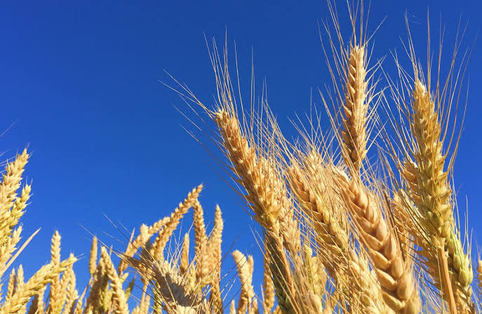
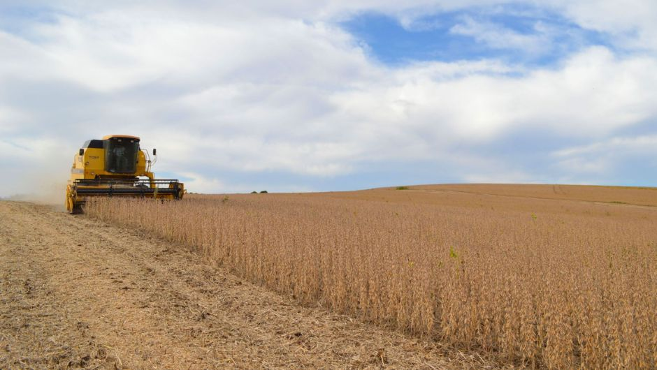

Trigo
O trigo é um dos cereais mais importantes do mundo, sendo cultivado em várias regiões devido à sua versatilidade e valor nutricional. É uma planta gramínea da espécie Triticum spp., da família Poaceae (ou Gramineae), amplamente utilizada na produção de farinha para diversos fins alimentares.
O trigo começou a ser cultivado e utilizado por povos antigos no período Neolítico, aproximadamente entre 10.000 e 12.000 anos atrás. Esse período marca o início da agricultura, quando os seres humanos começaram a se estabelecer de forma mais sedentária e a cultivar plantas e criar animais.

Soja
A soja é uma das leguminosas mais importantes do mundo, sendo cultivada em várias regiões devido à sua versatilidade e valor nutricional. É uma planta da espécie Glycine max, da família Fabaceae (ou Leguminosae), amplamente utilizada na produção de óleo, farelo, alimentos e outros produtos.
A soja começou a ser cultivada e utilizada por povos antigos na Ásia, principalmente na China, há aproximadamente 5.000 anos. Ao longo do tempo, seu cultivo se espalhou para outras regiões, tornando-se uma importante fonte de proteínas e um dos principais produtos agrícolas do mundo.

Contato
Preencha os campos abaixo para entrar em contato.